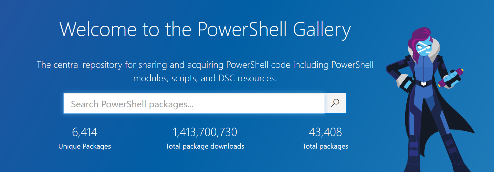

Powershell
… Or How the Cool People Say It
pwsh.exe
What is it?
How to get it
How to - Flow
Everything that any programming language can do!
- Variables
- Conditionals
- Looping
- Object Oriented & Functional Programming Paradigms
How to - Cmdlet
> [Verb]-[Noun] descriptors [-parameter]
> Get-Date
20 February 2020 20:35:40
> Get-Help Get-Date
NAME
Get-Date
SYNTAX
Get-Date [[-Date] <datetime>] [-Year <int>] [-Month <int>]
[-Day <int>] [-Hour <int>] [-Minute <int>] [-Second <int>]
[-Millisecond <int>] [-DisplayHint {Date | Time | DateTime}]
[-Format <string>] [<CommonParameters>] ...
Verbs
> Get-Verb
Most commonly used include Get, Set, Remove, & New
These verbs are enforced by Microsoft, even for custom made add ons.
Commands
> Get-Command
MASSIVE LIST
> Get-Command -Verb Set
SLIGHTLY SMALLER LIST
> Get-Command -Verb Set | Where-Object Source -match VpnClient
CommandType Name Version Source
----------- ---- ------- ------
Function Set-VpnConnection 2.0.0.0 VpnClient
Function Set-VpnConnectionIPsecConfiguration 2.0.0.0 VpnClient
Function Set-VpnConnectionProxy 2.0.0.0 VpnClient
Function Set-VpnConnectionTriggerDnsConfiguration 2.0.0.0 VpnClient
Function Set-VpnConnectionTriggerTrustedNetwork 2.0.0.0 VpnClient
Want More Commands?
Introducing…

Quick Summary
- Powershell both a scripting & programming lang
- 2 Types
- Powershell up to v5 (Windows only)
- Powershell Core v6+ (Cross Platform & Open Source)
- All the basic features of programming lang
- Extendable with Cmdlets
- [Verb]-[Noun] for ease of use
- Already tonnes of Cmdlets out of the box
- Not enough? There’s the Powershell Gallery
Quick Water Break

Using Powershell in BI
Azure Dev Ops
Problem
All our images are based on a Masked Mirror
Need to load into our ‘consuming’ databases (such as OxfordHealthDW) and create images when done.
AND clean up so we don’t have too many images
All of this needs to be done in DevOps, with no human interaction
Solution - Pt.1
DropAndRebuildDatabases.ps1
Cleans out data from ‘consumer’ databases
Solution - Pt.2
SQLJobRun.ps1
Runs a SQL Agent Job
Solution - Pt.3
SQLJobCheck.ps1
Pings SQL Agent to see if job is running
Solution - Pt.4
SQLJobResultsAndBuildImage.ps1
Check last outcome of SQL Agent Job
If success - create image
Solution - Pt.5
TrimImages.ps1
Delete anything older than last 5 images
Wrap up
All these scripts are used by us & can be found in:
- Utils git repo (under scripts)
Other scripts can be found in:
- Truecolours SSIS
- ECDS SQL Agent Job
Want More?
To learn more Powershell the Microsoft Documentation is a good place to start

Any Questions?